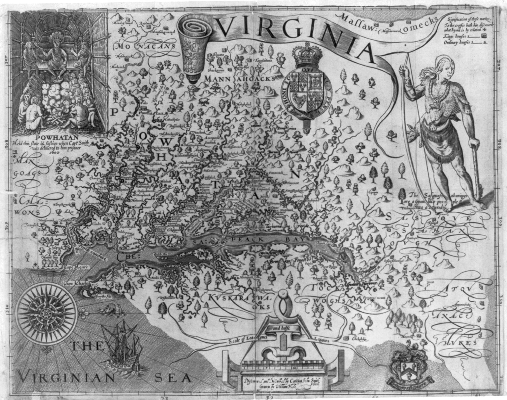

Directions: Read the background, study the map, then answer the questions.
Background. The map below is John Smith's map of Virginia, engraved by William Hole and first published in 1612. The country it charts was not empty. It was Tsenacommacah, the country of the Powhatan paramount chiefdom, some thirty peoples under Wahunsenacawh, whose towns the map marks along the rivers beside the few English settlements. Jamestown, planted in 1607, nearly died in the starving time of 1609 and 1610, and lived afterward as a tobacco colony. Source: Library of Congress, via Wikimedia Commons.

1. Source the map. Who drew it, who engraved it, when was it first published, and whose towns does it mark along the rivers?
2. State what nearly ended the colony this map served. Name the winter, give the numbers of colonists before and after it, and name the crop that afterward remade the colony and the man who planted its profitable strain.
3. Explain the labor system tobacco first used. State what the headright granted and for what, and state the terms an indentured servant worked under.
4. Connect the map to 1676. Name the rebellion of that year and its leader, state one charge his declaration made against the governor, and state the labor decision Virginia's great planters made after it.
1. Source the map. John Smith drew the map from his 1608 surveys of the Chesapeake. William Hole engraved it, and it was first published in 1612. Along the rivers it marks the towns of the Powhatan peoples, the some thirty peoples of the paramount chiefdom under Wahunsenacawh, beside the few English settlements. The country on the map is Tsenacommacah, not vacant land. (Blueprint 5)
2. State what nearly ended the colony, and the crop that remade it. The starving time, the winter of 1609 and 1610, reduced the colony from some five hundred colonists to about sixty survivors. The crop was tobacco, and John Rolfe planted the milder West Indian strain from about 1612 that found England's market and became Virginia's cash crop. (Blueprint 5)
3. Explain the labor system tobacco first used. Under the headright system, any person who paid for an immigrant's passage to Virginia received fifty acres of land, which made importing laborers the fastest road to a large estate. The laborers were indentured servants, bound to work usually four to seven years in exchange for their passage and for freedom dues at the end of the term. Many died of seasoning fevers in their first summer. (Blueprint 6)
4. Connect the map to 1676. The rebellion was Bacon's Rebellion, led by Nathaniel Bacon in 1676. His Declaration in the Name of the People charged Governor Sir William Berkeley with raising great unjust taxes for the advancement of private favorites, and with protecting Indigenous peoples against the king's loyal subjects instead of answering raids on the frontier; either charge earns the point. After the rising burned Jamestown and collapsed, Virginia's great planters turned decisively toward enslaved African labor, bound for life and unable to claim land or freedom at a term's end. (Blueprint 6)
Teacher note. This check is formative. Question 3 is the lesson diagnostic. A student who describes the headright as a wage, or who gives the servant no term and no freedom dues, has the crop without its labor system, and should redo sections E and G of the guided notes before the writing task.